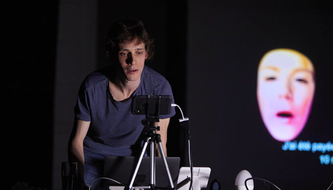

mp
pngfst
vl
2051
13 — 23.5
genève
festival des arts
technologiques et déviants
Müller-Brockmann, Josef; Wobmann, Karl (1989). Fotoplakate: von den Anfängen bis zur Gegenwart [Photo posters: From the Beginning to the Present]. Museum of Design Zurich. Aarau, Switzerland: AT Verlag. ISBN 9783855023516. Pixel preview Resize to fit zenith zone Frame Group Feedback Reset Day day Month month Year year Hour hour Minute minute Second second Size Overlay Ork Grids Cursors Background Desktop App Lamp Preferences Rectangle Ellipsis Component Settings
Wednesday 24 May
21:00 – 23:00
Cinéma Spoutnik
CHF 15.- / 10.-
Tickets: infomaniak

Windows Onboarding
12.4 pt 64% 90px 45 kg 12 o'clock $64 $7 €64 €64 £7 £7
elk best mnm DCGQOMN
Identity identity (M) [M] {M}
The quick brown fox jumps over the lazy dog
Efraim User account Text Tool Team Library
Monster Lars, stina


Tschichold was the son of a provincial signwriter, and he was trained in calligraphy. In 1919, he began in the class of Hermann Delitzsch a study on the "Leipzig Academy of the arts". Due to his extraordinary achievements, he soon became a master pupil of the rector of Walter Tiemann – a font designer for the Gebr.-Klingspor foundry and was commissioned to his fellow students. At the same time, he received the first orders in the framework of the "Leipziger Messe" and in 1923 set up his own business as a typographic consultant to a print shop.
Notes Doors open at 8:30pm Performances start at 9pm sharp. IMPORTANT: the Spoutnik Cinema has a limited capacity, therefore, please make sure to arrive at least 15 minutes before the scheduled start time of the first performance. Failing this, access cannot be guaranteed!
Life
This artisan background and calligraphic training set him apart from almost all other noted typographers of the time, since they had inevitably trained in architecture or the fine arts. It also may help explain why he never worked with handmade papers and custom fonts as many typographers did, preferring instead to use stock fonts on a careful choice from commercial paper stocks.
Early life and education
Josef Müller was born May 9, 1914 in Rapperswil, Switzerland.[2][3]
He studied architecture, design and art history at both the University
of Zurich at Gewerbeschule,[2] and Zurich University of the Arts (also
known as Kunstgewerbeschule Zurich), where he studied with Ernst Keller
and Alfred Willimann.[3]


typography
on a baseline
is an achievement
Friedl, Friederich, Nicholas Ott and Bernard Stein. Typography: An encyclopedic survey of type design and techniques through history. Black Dog & Leventhal, 1998. ISBN 1-57912-023-7.
Etant — impliqués personnellement. Je propose de le faire de manière plus approfondie que ce que propose le wiki en allemand, car malheureusement notre wiki francophone a connu — et connaît encore — trop d'épisodes de tension intracommunautaire sur fond de suspicion de collusion entre sysops et divers « clans ». La permanence et la grande diversité de ces dramas, de leurs protagonistes et de leurs procédés sur plus de dix années démontre que le sujet n'est pas conjoncturel ni lié à des individus particuliers, mais bien structurel, systémique et inscrit dans le mode de fonctionnement de ce wiki : changer ces mentalités et ces habitudes bien ancrées depuis plus de dix ans ne se fera pas sans un peu de volonté, de rigueur et de vigilance.
Danser toute la nuit tout nu
DJ Sympa
La Salle du Faubourg / 21.10.21

Danser toute la nuit tout nu
DJ Sympa
La Salle du Faubourg / 21.10.21

Etant — impliqués personnellement. Je propose de le faire de manière plus approfondie que ce que propose le wiki en allemand, car malheureusement notre wiki francophone a connu — et connaît encore — trop d'épisodes de tension intracommunautaire sur fond de suspicion de collusion entre sysops et divers « clans ». La permanence et la grande diversité de ces dramas, de leurs protagonistes et de leurs procédés sur plus de dix années démontre que le sujet n'est pas conjoncturel ni lié à des individus particuliers, mais bien structurel, systémique et inscrit dans le mode de fonctionnement de ce wiki : changer ces mentalités et ces habitudes bien ancrées depuis plus de dix ans ne se fera pas sans un peu de volonté, de rigueur et de vigilance.
mp
pngfst
vl
2051
13 — 23.5
genève
festival des arts
technologiques et déviants
«mots futurs»
exposition collective dans
le cadre du mapping festival à l'API
du 1er mai au 6 juin 2021
Lu-Ve — de 10h à 17h
Ecomusée Voltaire de l'API
Rue du Vuache 25
Vernissage: 1er mai 2021
expo

«LINXX»
de NA
De nuit tous les soirs jusqu’à 23h.
Installation extérieure de 326 prises électriques multiples.

«L'inclusif-ve»
de Tristan Bartolini
Une présentation de la technique épicène ou son invention de 30 nouveaux caractères ajouté à notre alphabet (drapeaux dans la cour, posters et autocollants dans l’API). Tristan Bartolini est fraîchement diplômé en Communication visuelle de la HEAD Genève et a remporté le Prix Art Humanité 2020.

«XY»
des étudiants Bachelor Media & Interaction Design de l’ECAL
Une présentation de 5 oscilloscopes piratés autour du potentiel graphique et interactif, réalisés lors d’un atelier donné par Ted DAVIS (exposition des oscilloscopes dans la mezzanine et de films dans l’entrée de l’API).

«Castr@»
Begonia Cuquejo
Installation en réalité augmentée et géolocalisée à demeure. L'installation est une trace de la performance Castr@. Une installation du récit de 1937, année de l’exécution de l'arrière-grand-père de l'artiste.
Concrètement, elle est formée par l'affiche de 1937. En Réalité Augmentée, le témoignage. Les mots du passé qui nous ouvrent la porte sur un futur différent. "Ce que je transmets ce n'est pas de mon mérite à moi, mais de celui de tant et tant d'autres femmes..." Lettres typographiques en 3D.
À l’extérieur de l’écomusée Voltaire de l’API.

«La Plus Belle chose qui soit ou le Printemps»
des Ateliers FFF
Vernissage: 8 mai à 18h
Une création mécanique in situ, interactive et dérisoire.
performances
CASTR@
Begonia Cuquejo, 20 min
1er mai à 18h30
La performance s'articule autour d'une «minute de silence», un acte commémoratif pour rendre hommage à tous les corps traversés par la violence du silence.

« dSimon »
de Tammara Leites et Simon Senn
21—22 mai 2021
Le public participe à l’élaboration d’un spectacle qui aura lieu en novembre 2021 au Théâtre Vidy-Lausanne. Lors de 3 séances en huis clos en visioconférence (Zoom certainement), le public rencontre les artistes ainsi qu’une intelligence artificielle nommée dSimon et interagit avec eux. L’intelligence artificielle a reçu tout ce que Simon SENN a écrit dans sa vie afin de pouvoir produire à son tour des écrits en son nom. Elle se révèle parfois hors de contrôle, voire dangereuse.

« Tictacdingdong »
Le 23 mai 2021 à 21h
Chorégraphie de Charlène Moreau, compagnie LES FOUINES
Chanteuse Mona Lysa Mona Coca
Une performance inédite avec des diapositives picturales typographiées par l’API.
ateliers

« Lumières sur mes roues »
des Ateliers FFF & Claire Eliot
Les samedis 8 et 15 mai 2021
Customisation de vélos et de gilets avec des LEDs.